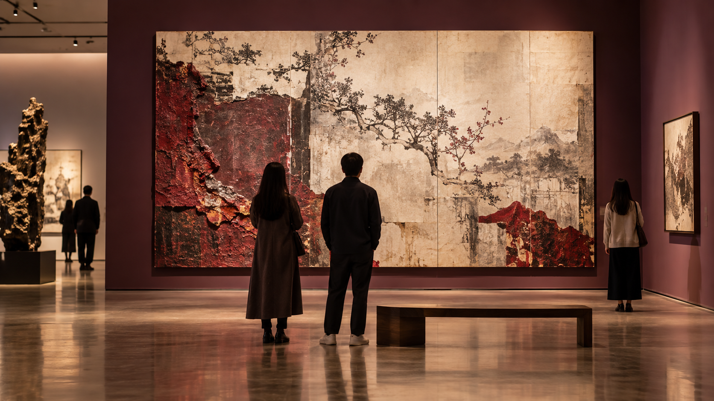

NOTICIA · 8 SEP 2026
La inteligencia artificial, eje de la Expo Digital Global
La innovación digital y la IA ocupan un lugar central en la agenda tecnológica china de septiembre.
 LongCont
LongContACTUALIDAD
Enterate de las noticias, actividades y temas que acercan a nuestra comunidad a la China de hoy.
ACTUALIDAD
Lo más nuevo sobre innovación, economía, educación y bienestar.
NOTICIA · 8 SEP 2026
La innovación digital y la IA ocupan un lugar central en la agenda tecnológica china de septiembre.
ECONOMÍA · 8 SEP 2026
El intercambio de bienes creció 17,6 % interanual durante los primeros ocho meses de 2026.
EDUCACIÓN · 8 SEP 2026
Con el inicio del semestre, China refuerza el desarrollo y la gestión de libros de texto.
SALUD · 8 SEP 2026
El país busca extender el seguro médico a trabajadores temporales y de nuevas modalidades laborales.
ARCHIVO DE NOVEDADES
Una selección de contenidos publicados anteriormente para seguir explorando la cultura china.

CULTURA · 7 SEP 2026
Exposiciones, diseño y proyectos creativos acercan lenguajes tradicionales a nuevas generaciones.
GASTRONOMÍA · 6 SEP 2026
Ingredientes, técnicas y recetas tradicionales siguen inspirando encuentros en todo el mundo.
TURISMO · 5 SEP 2026
Ciudades históricas, montañas y pueblos tradicionales forman parte de nuevas experiencias culturales.
COMUNIDAD · 4 SEP 2026
La comunidad impulsa talleres y encuentros para acercarse a la lengua y la cultura china.
“Conocer la actualidad es otra forma de acercarnos a una cultura viva.”